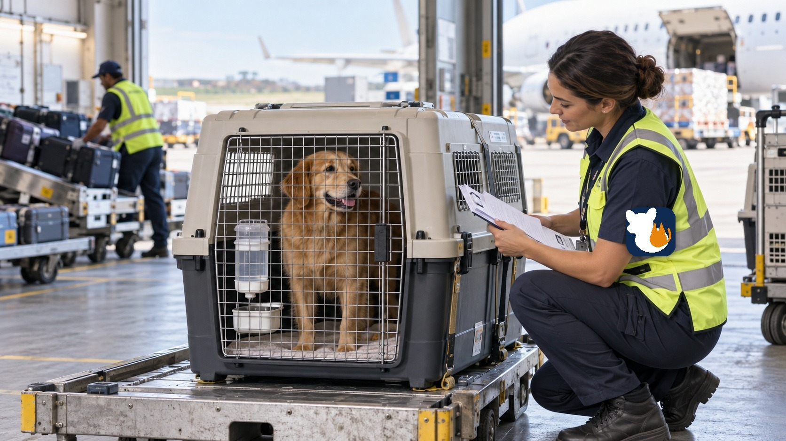

PawTrack started with a simple frustration: when a pet is in transport — between a shelter and a foster home, across the country to a new family — the people who love that animal are often left waiting for a phone call. We thought pet transport deserved the same visibility as a package delivery. So we built it.
Today, PawTrack gives shelters, rescues, and transporters a simple way to log every step of a pet's journey, and gives owners a live window into exactly where their pet is, right up to the moment they're home.

Every handoff, every stop, every status change — logged and visible, not just promised.
Behind every tracking number is a living, feeling animal. We build with that in mind first.
Shelters and transporters trust PawTrack to keep an accurate, timestamped record of every journey.